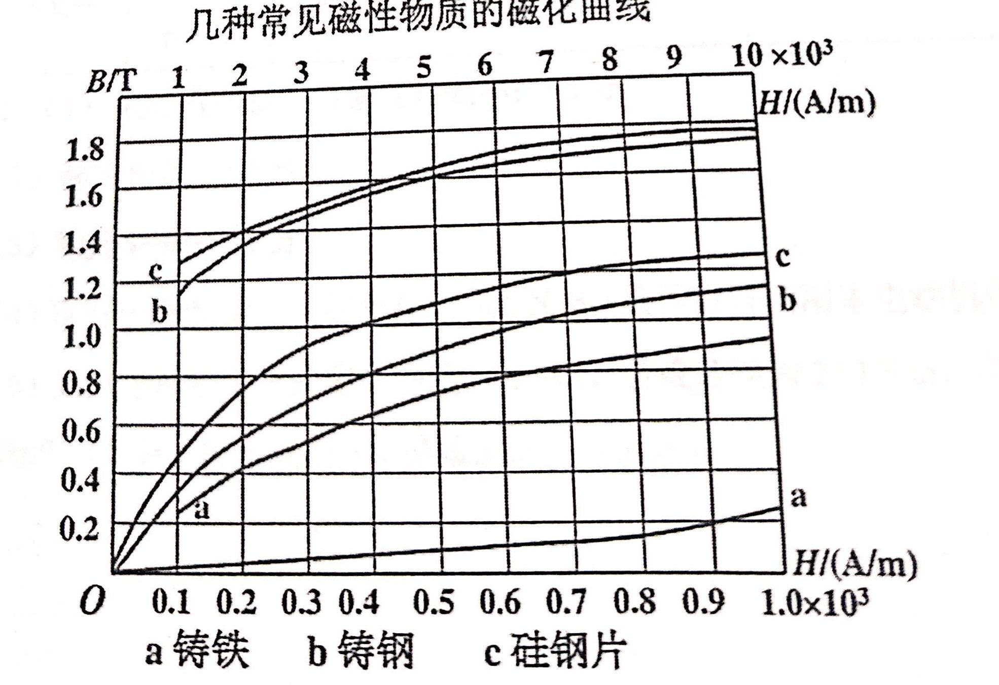

1. 闭合铁芯线圈的电流
线圈匝数 300 匝，磁感应强度 B = 0.9 T，磁路平均长度 45 cm。铁芯为铸铁，求线圈电流。
先在下方原题磁化曲线中找到铸铁 a，按上方横坐标读数。B = 0.9 T 时 H 约为 9 × 10³ A/m；读图存在误差，可在输入框中调整。

说明：调整 H 是模拟不同的读图值；B 改变后，应先从材料磁化曲线重新读取对应 H。
先自己作答，再查看解析；调整电路参数，观察结果与计算过程。题目参数默认与试卷一致。
默认显示原题结果；输入框可用于检验其他参数。
线圈匝数 300 匝，磁感应强度 B = 0.9 T，磁路平均长度 45 cm。铁芯为铸铁，求线圈电流。

说明：调整 H 是模拟不同的读图值；B 改变后，应先从材料磁化曲线重新读取对应 H。